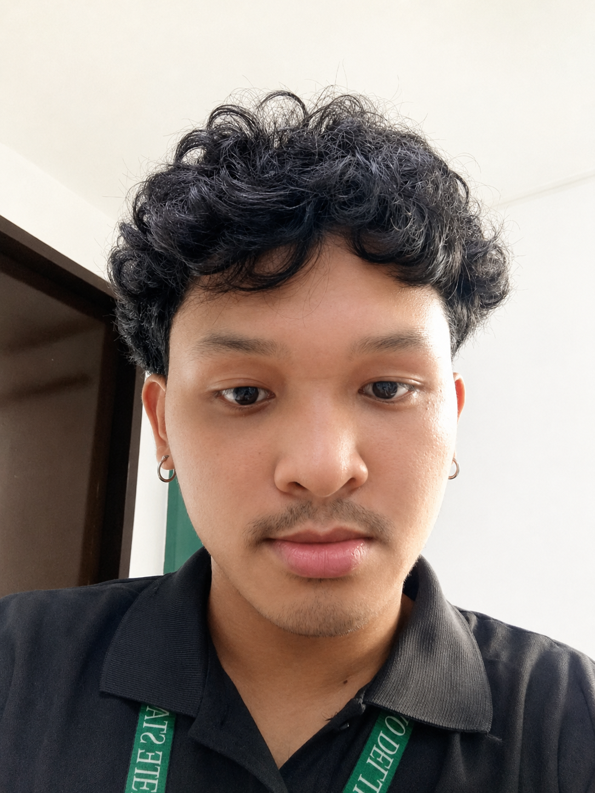

2022 - 2027 | Expected graduation
Bachelor of Science in Information Technology
Davao Del Norte State College
Barangay New Visayas, Panabo City, Davao del Norte, Philippines
4th-year student | IT415 | Section 4G

Curriculum vitae Open to opportunities
4th-year Information Technology student creating clear, engaging digital stories through video editing and photography.
isaiahjairomartinez203@gmail.com01 / About
I am a 4th-year Information Technology student interested in technology and creative digital work. I bring together developing technical skills with a focus on video editing, photography, and thoughtful visual storytelling.
02 / Education
2022 - 2027 | Expected graduation
Davao Del Norte State College
Barangay New Visayas, Panabo City, Davao del Norte, Philippines
4th-year student | IT415 | Section 4G
Relevant coursework
03 / Skills
Cutting, pacing, and polishing footage into clear, watchable videos.
Applying framing, lighting, and image editing with a creative eye.
Building lightweight, responsive pages with HTML, CSS, and JavaScript.
04 / Projects
A responsive one-page portfolio designed to present my Information Technology background, creative interests, skills, and contact details in a focused format.
Additional projects, repository links, and live demos can be added when they are available.
05 / Contact
For opportunities, collaborations, or a conversation about creative digital work, send me an email.